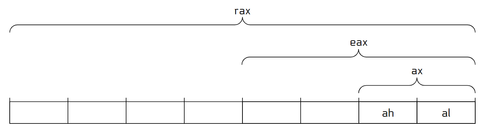
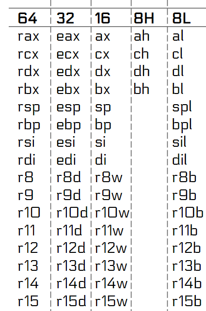
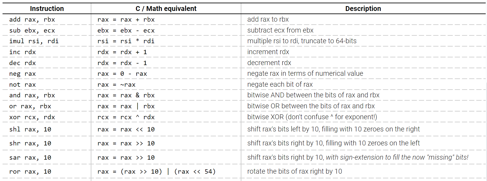
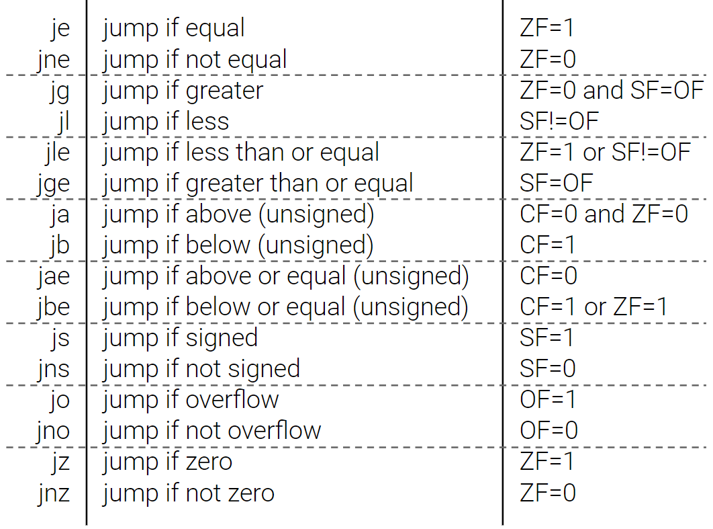

曾经有没有听说这样的传闻“汇编比 C++ 还快”，如果不开 O2 优化，那确实还比较有道理，O2 优化下手写汇编的提升空间就很小了。
所以学习汇编的目的不是手写它，而是能看懂编译器生成的汇编代码，知道程序运行的原始操作是什么，提升空间在哪里。比较熟悉汇编后，可以直接想象 C++ 代码编译后的样子。
人们为了理解机器代码在 CPU 中是如何执行的，将 CPU 抽象成了 指令集架构 (ISA)，它定义了硬件如何处理机器语言，因此不同的 ISA 有不同的机器语言。我们只研究 x86-64 架构，现在 Intel 和 AMD 的处理器都是 x86-64，苹果就不是。
汇编语言和机器代码是 1:1 对应的，可以视作程序运行的原始操作，下面进入正题：
1 | int sum(int* begin, int* end) { |
汇编如下：
1 | sum: |
这段汇编和下面的 C++ 代码差不多：
1 | int sum(void* rdi, void* rsi) { |
需要解释一下的有：
cmp指令是比较两个整数，但具体比较的是什么呢，是小于、等于还是大于？应该把它们当成有符号整数还是无符号整数？答案是所有的结果都得出来了，cmp的原理是做一次二进制减法，把这个过程中的关键信息存到了 EFLAGS 寄存器中。j开头的指令是条件跳转指令，即在某种条件下跳转。它会访问 EFLAGS 寄存器，从而知道上一条cmp的结果是什么。je是相等时跳转，jne是不等时跳转。- 函数的第一个参数在
rdi寄存器中，第二个在rsi寄存器中，int返回值要存进eax寄存器中。
寄存器
-
通用寄存器有 个：rax, rbx, rcx, rdx, rsp, rbp, rsi, rdi, r8, r9, r10, r11, r12, r13, r14, r15
rsp 存系统栈的栈顶。
-
指令指针：接下来要执行的指令的地址（机器代码在内存中）。
-
其他寄存器，比如 EFLAGS，浮点寄存器，向量寄存器，操作系统专用寄存器。
通用寄存器都是 位无符号整数，为了支持 位的运算，每个寄存器的低 位和 位都可以当成一个完整寄存器用，如图所示，eax 就是 rax 的低 位。

完整列表

接下来是给寄存器赋值：
1 | mov rax, 0x3f3f3f3f |
汇编中的常量称为立即数 (immediate value)，在指令表中记作 imm 或 i。
当 eax 被修改后（赋值或者运算），rax 的高 位会被清 ，修改 ax,al,ah 则不会，所有寄存器都是。
理解流水线后可以了解一下这样设计的原因。

寻址
以下汇编等价于 rbx = *(int*)rax：
1 | mov rbx, DWORD PTR [rax] |
解引用地址的一般的用法为：
1 | SIZE PTR [base + index * scale + displacement] |
base 和 index 都是 64 位寄存器，scale 和 displacement 都是常量，其中 scale 只能为 1,2,4,8 之一。每个部分可以选择性省略。SIZE 有以下选择：
BYTE解引用 8 位。WORD解引用 16 位。DWORD解引用 32 位。QWORD解引用 64 位。
有一个 int 数组首地址为 rax，访问下标 rbx 的元素，并把它加到 ecx，汇编如下：
1 | add ecx, DWORD [rax + rbx * 4] |
还可以只计算地址，不解引用，如果要计算 rcx = rax + rbx * 4 + 5，可以直接：
1 | lea rcx, [rax + rbx * 4 + 5] |
lea 指令是一个纯算术指令，可以用于计算。
控制流
控制流主要是用 jmp 系列指令。
首先是无条件跳转 jmp label，label 是汇编中的一个标签，表示跳转到标签处执行，在机器代码中，标签并不存在，只记录 label 和这个 jmp 指令的位置之差，所以它的原理是将指令指针 rip 加上一个常量，这种方式叫相对跳转，另一种方式绝对跳转不常用，暂时不管。
接下来是条件跳转。在跳转前执行一句 cmp，比较结果存进 EFLAGS 寄存器，然后通过读取 EFLAGS 寄存器来决定是否跳转。
条件跳转列表

ZF, SF, OF, CF 都是 EFLAGS 寄存器中的某一位。
有个和 cmp 类似的指令叫 test A, B，功能是计算 A 和 B 的按位与，然后得出结果是否 ,, 还有 __builtin_parity，通常用法是 test rax, rax，来得出 rax 的信息。
练习：阅读手写读入的汇编
Intel 语法 vs AT&T 语法
汇编有两套语法：Intel 语法，AT&T 语法。我们用的是 Intel 语法。它们是 1: 1 对应的，所以会了一种另一种不难学。
如何得到编译结果
建议使用 Compiler explorer。一个技巧：在源代码中右键然后点 Reveal linked code 可以查看特定语句对应的汇编代码。
如何运行汇编
完整的汇编程序需要系统调用，建议 GCC 内嵌汇编。
语法为 asm volatile (汇编主体 : 输出列表 : 输入列表)，输入列表就是把 C++ 中的值传到寄存器上，输出列表是把寄存器传到 C++ 变量上，具体用法见代码。
1 | // 编译选项 -masm=intel |
更多
就算汇编语言比 C++ 简单很多，内容也不止这么点，任何指令都可以在 这个网站 上查询它的用处。
以下是可以了解的内容：
- EFLAGS 寄存器
- cmov 系列指令
- AT&T 语法
- 汇编中的函数与递归，以及调用规约
- 一些常见指令：
- movsx, movzx, movabs
- div, idiv